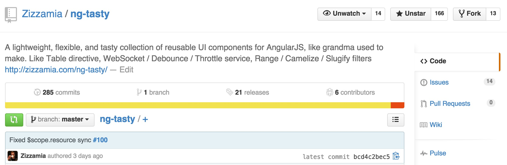

The Secret Life(cycle) of Components
@zizzamia
Solid foundation
When should we use them?
Practical concepts
Bridge the gap
Speed up Performance in 7 steps
There is a deeper game
Twilight Zone
repeated manual work
to create a benchmark
How to create a benchmark
Enter this
npm install generator-benchpress
yo benchpress ng-tasty
You get this
create benchmarks/protractor.conf.js
create benchmarks/ng-tasty/index.html
create benchmarks/ng-tasty/benchmark.spec.jsPrepare a benchmark on the dist
To see the case we are testing we can run
http-server -p 8000And visit
http://localhost:8000/benchmarks/ng-tasty/ngTasty Simple Table
$scope.resource = {
"header": [
{ "name": "Name" },
{ "star": "Star" },
{ "sf-Location": "SF Location" }
],
"rows": [
{ "name": "Ritual Coffee Roasters", "star": "★★★★★", "sf-location": "Hayes Valley"}, ...
]
};To recap
- 1) compare api implementation
- 2) compare versions
- 3) compare third part solutions